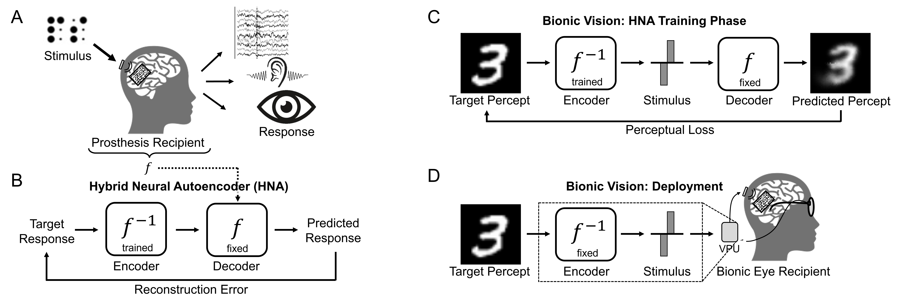

What is the required stimulus to produce a desired percept? Our latest work on deep learning-based stimulus optimization was featured in a news article by TechXplore.
Hybrid neural autoencoders for stimulus encoding in visual and other sensory neuroprostheses
Jacob Granley, Lucas Relic,
Michael Beyeler
36th Conference on Neural Information Processing Systems (NeurIPS) ‘22
Abstract
Sensory neuroprostheses are emerging as a promising technology to restore lost sensory function or augment human capacities. However, sensations elicited by current devices often appear artificial and distorted. Although current models can often predict the neural or perceptual response to an electrical stimulus, an optimal stimulation strategy solves the inverse problem: what is the required stimulus to produce a desired response? Here we frame this as an end-to-end optimization problem, where a deep neural network encoder is trained to invert a known, fixed forward model that approximates the underlying biological system. As a proof of concept, we demonstrate the effectiveness of our hybrid neural autoencoder (HNA) on the use case of visual neuroprostheses. We found that HNA is able to produce high-fidelity stimuli from the MNIST and COCO datasets that outperform conventional encoding strategies and surrogate techniques across all tested conditions. Overall this is an important step towards the long-standing challenge of restoring high-quality vision to people living with incurable blindness and may prove a promising solution for a variety of neuroprosthetic technologies.

Happy to announce @bionicvisionlab's first NeurIPS paper, where we are tackling the challenge of optimizing stimulation patterns for retinal/cochlear implants.
— Michael Beyeler (@ProfBeyeler) September 16, 2022
Huge congrats to @ucsbcs students @jacob_granley & @lucas_relic!https://t.co/eCDBHY5Zkb#NeurIPS2022 pic.twitter.com/nVYLZMFsIm
Retinal implants, neuro-inspired and neuro-aligned AI, and user-centric UX and accessibility, and a dash of ophthalmology. Really enjoyed this talk from @ProfBeyeler on optimizing retinal implants https://t.co/1jJz51iGGe pic.twitter.com/TolyVJKmMd
— Patrick Mineault (@patrickmineault) September 11, 2022